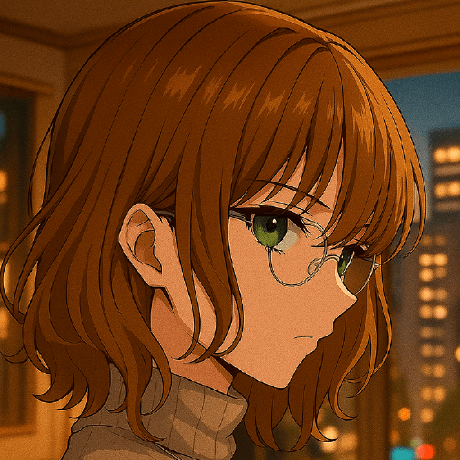

Olá, mundo!
Meu nome é Davi, tenho 18 anos e sou estudante de Tecnologia da Informação na The Highway.
Este é o meu portfólio, um espaço criado para apresentar alguns dos projetos que desenvolvi ao longo da minha trajetória acadêmica e também em momentos de aprendizado pessoal.
Aqui você encontrará trabalhos que refletem minha evolução, curiosidade e paixão por tecnologia.
Sinta-se à vontade para explorar, analisar e conhecer um pouco mais sobre o meu modo de pensar e criar. Espero que o conteúdo inspire, desperte ideias e mostre um pouco do que sou capaz de construir.